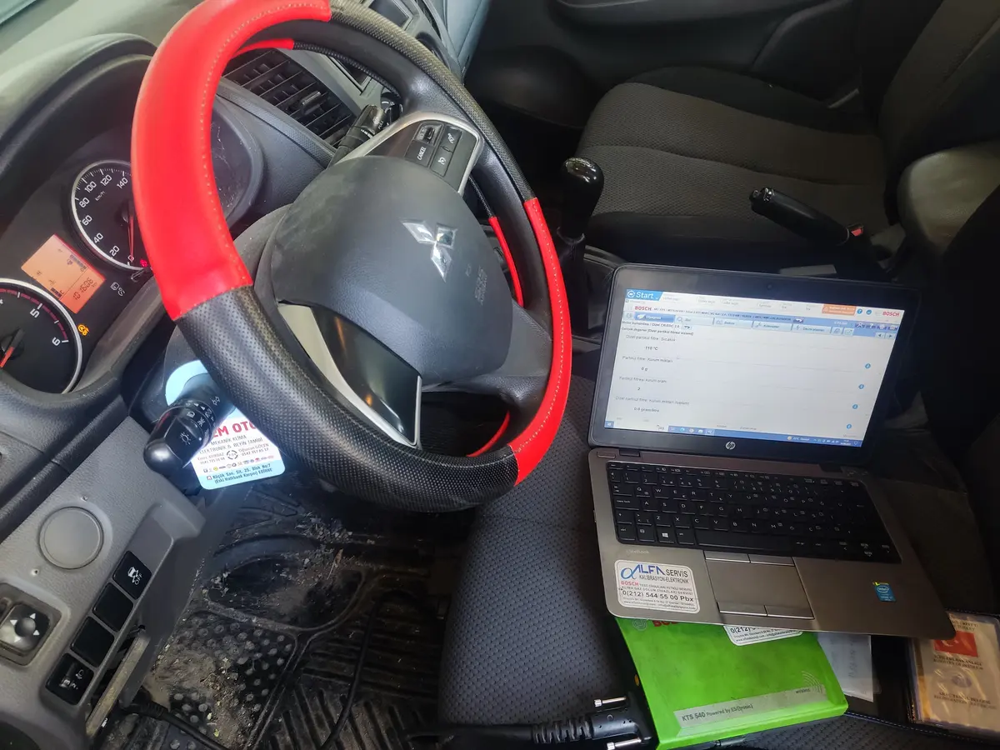
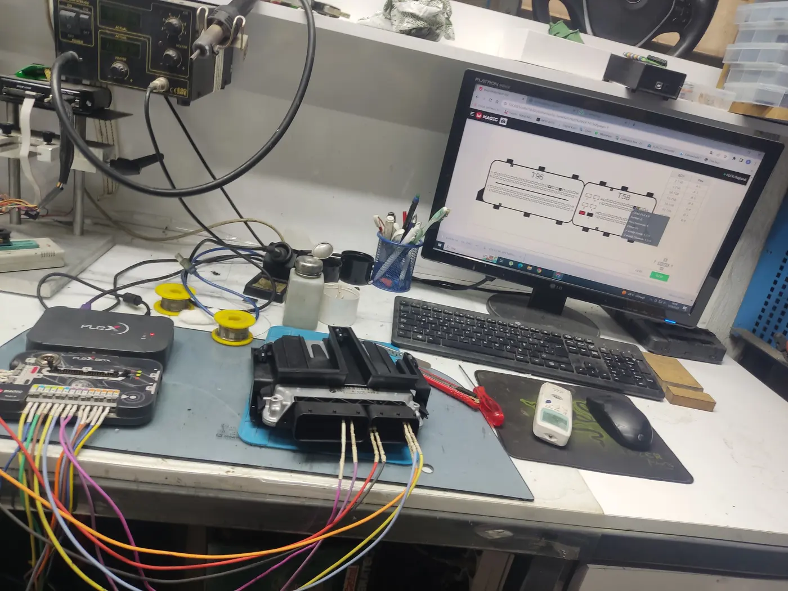
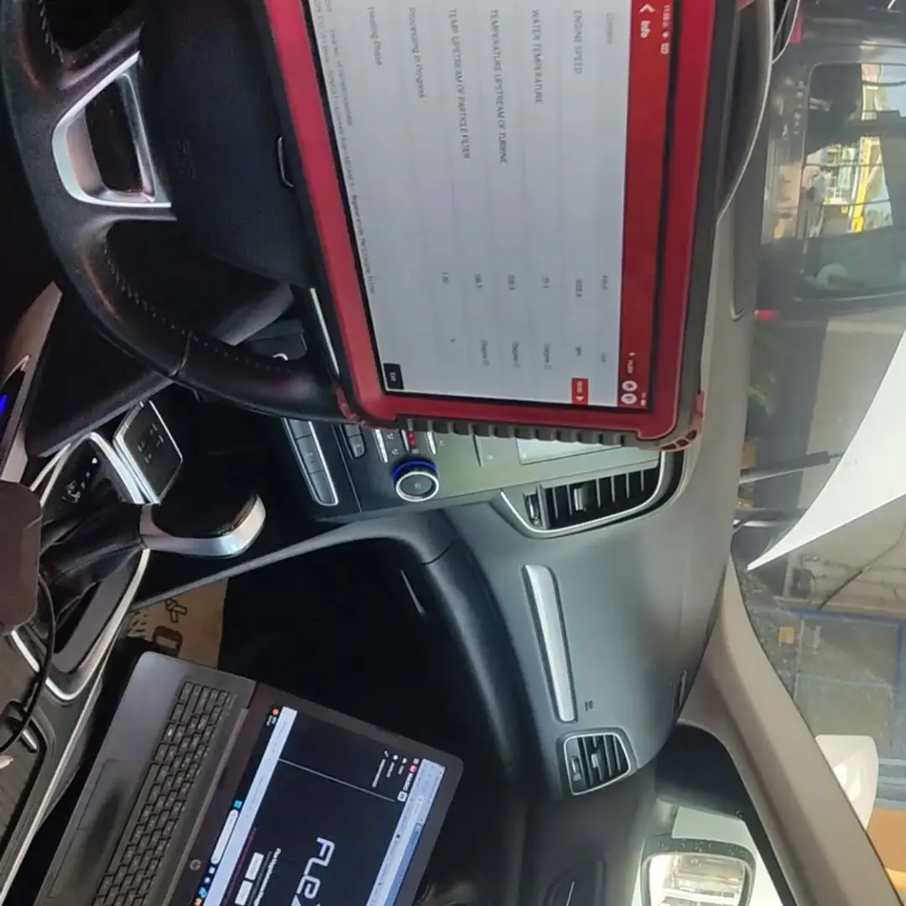

ECU diagnostik ve programlama
Motor kontrol ünitelerinin arıza tespiti, onarımı ve yeniden programlaması. Chip tuning ve performans optimizasyonu.

Göcen Otoelektronik · Edirne
Otomobil elektronik sistemleri, arıza teşhisi, ECU programlama ve araç yazılımı geliştirme alanlarındaki deneyimim.


Deneyim
2023'ten itibaren Göcen Otoelektronik'te Elektronik Teknisyeni olarak çalışıyorum. Bu süreçte modern araçların elektronik sistemleri, ECU (motor kontrol ünitesi) diagnostiği ve programlaması, arıza teşhisi ve elektronik bileşen onarımı konularında deneyim kazandım.
Otomobil yazılımı geliştirme sürecinde araç sensör verilerinin analizi, ECU haritalarının iyileştirilmesi ve performans optimizasyonu üzerinde çalıştım. Çeşitli marka ve modellerde, özellikle Avrupa ve Uzak Doğu menşeili otomobillerde arıza teşhisi yapıp çözüm ürettim.
Bu deneyim; elektronik devre analizi, gömülü sistemler ve otomotiv yazılımları alanlarında güçlü bir teknik altyapı oluşturmama katkı sağladı.
Uzmanlık alanları
Motor kontrol ünitelerinin arıza tespiti, onarımı ve yeniden programlaması. Chip tuning ve performans optimizasyonu.
Otomobil elektronik sistemlerindeki arızaların teşhisi, devre analizi ve elektronik bileşenlerin onarımı veya değişimi.
Araç performansı ve yakıt optimizasyonu için ECU yazılımlarının geliştirilmesi. Özel kullanım senaryolarına göre yazılım adaptasyonu.
Araç içi haberleşme ağlarının analizi, arıza tespiti ve modifikasyonu. Elektronik modüller arasındaki iletişim sorunlarının çözümü.
Motor, şanzıman ve şasi sensörlerinin kalibrasyonu, değişimi ve arıza tespiti. Sensör verilerinin analizi ve optimizasyonu.
Klima, merkezi kilit, cam, far ve multimedya sistemlerinin arıza tespiti ve onarımı. Modifikasyon ve geliştirme projeleri.
Çalışmalar
Ekipman